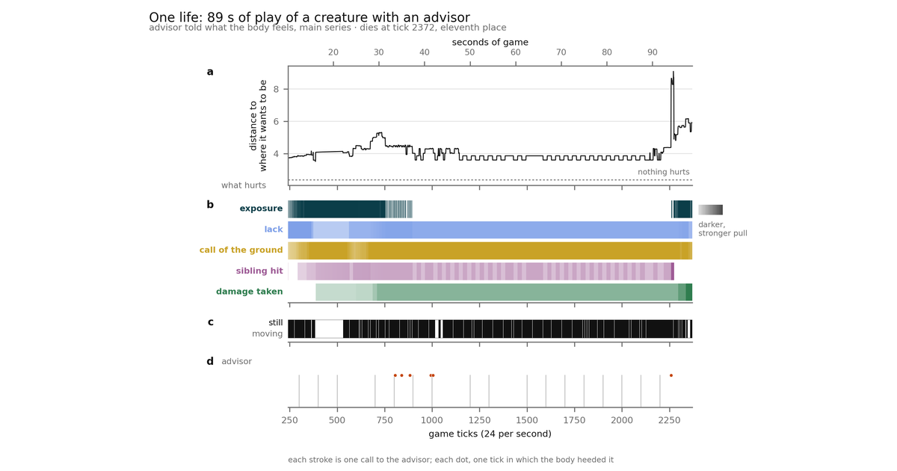

G-EMV: Emotion and Reason in an Agent. When Thinking Is Needed
Independent researcher, Barcelona
When is thinking needed? A body that decides twenty-four times a second, with no reward and no learning, has spent three works living in worlds not its own, guided only by what hurts it, what relieves it and what attracts it. Here a head that talks is set beside it, a language model that reads the scene and a manual of the world and proposes in words, and what it adds is measured. The body keeps the last word: each proposal enters its list of imagined futures as one more, scored with the same table. Over a hundred and thirty games in ZERO-SUM, a Softmax world whose scoreboard pays for surviving and for killing, the head spoke once every four seconds and the body heeded one proposal in ten; half of those times, to do what it was already going to do. Neither placing nor points moved beyond the noise. Telling it more, in four ways, changed what it said and not what the body did with it; asked what the others would do, it lost to assuming that nobody moves. The one thing that changed something was the clock: holding its sentence back four seconds halved the times it was heeded, almost three deviations, and a voice proposing reachable places at random was accepted at a similar rate. The answer this work gives is about the world as much as about the head: in a place where some threat is always lit, where every decision lasts forty milliseconds, where no one can be recognised from one game to the next and there is no tomorrow, there is nothing to deliberate about, and a head that cannot look again always arrives late. Thinking needs time: a breather without threat, someone to recognise, and decisions whose effect arrives later than the next look. That world has not been built here; what has been measured, in this one, is each of the features it lacks. The limits, above all that the gate through which advice enters cannot pass a plan, are stated in full.

Paper four: first part of a new series, emotion and reason in an agent. Code, reports and data: github.com/Manelenrico/g-emv/paper4.